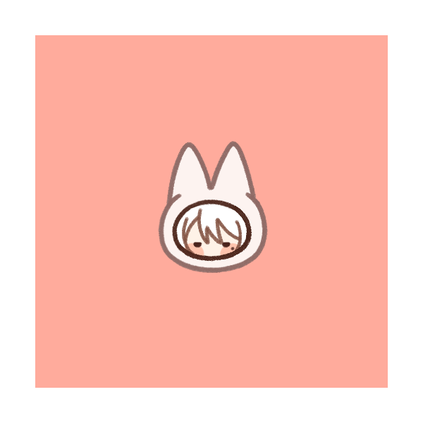

About Me
I’m Aria, a Digital Media master’s student at the University of Leeds.
My undergraduate research explored AI NPCs and interactive storytelling in games.
I enjoy games, drawing, photography, films and animation. I also have two dogs back home.